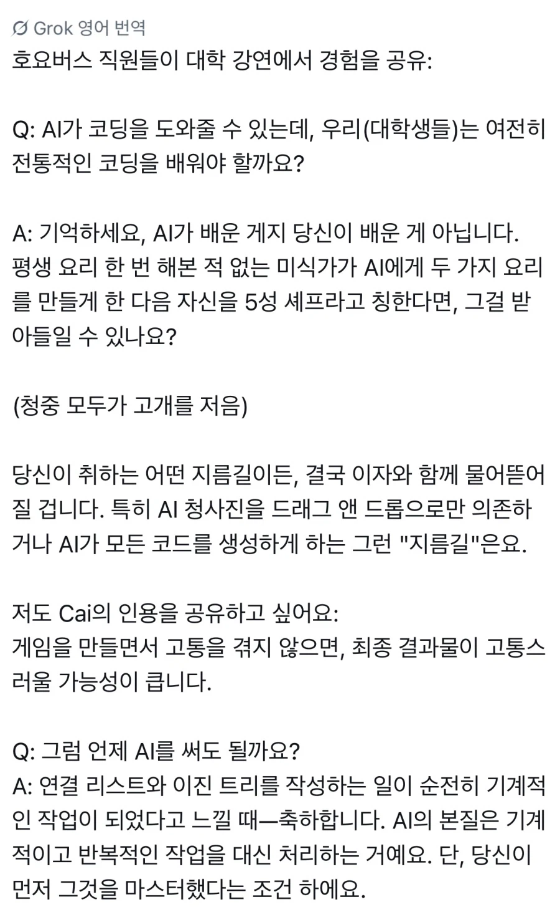

창의력은 인간이, 댠순 반복을 통한 노가다는 기계가.
이 둘을 합쳐서 완벽한 게임을 만드는거다.

창의력은 인간이, 댠순 반복을 통한 노가다는 기계가.
이 둘을 합쳐서 완벽한 게임을 만드는거다.
그렇다고 맨땅에 C언어 C++에 어셈블리, 알고리즘 데이터베이스 이딴 전공수업에 4년 보내는건 너무 안타깝고 불쌍하긴 하다..
그게 베이스가 되는건데 왜 안타까움?
미슐랭 3스타 쉐프도 감자 깎고 양파 써는거 부터 시작했어
그거 못하면 문제 좀만 복잡해지면 풀지도 못함
특히 자료구조랑 알고리즘 베이스 얕은애들 문제 좀만 어려워지면 다 못 품
인생의 절반이라는 말은 대부분 나이의 반절정도를 함께했을때쓰는 말임 23년도부터 인생의 절반을 함께한거면 너여섯살이야.. ㅋㅋㅋㅋ
그게 중요해?? 그냥 23년부터 주구장창 썼구나라고 생각하고 끝나면 안돼?
말을 잘못알고 쓰고있는듯해서 말한건뎅 왜케화가남
자기성찰과 인생의 목표를 가지게 된 시점이 인생의 시작이라면 그거도 맞는 말이라 생각함
오.. 그럴법해
함부로 말 얹을 주제가 아니라고 생각하긴 하지만, 인간의 역할이 창의성이 맞긴 할까?
애초에 창의력이란 건, 이미 알고 있는 지식들 간의 연관성을 빠르게 파악하고 연결해내는 것 아닐까 하거든.
난 그림, 소설, 음악같은 창의적 예술활동이라 하는 것들이 정말 빠르게 따잇당할거라 생각했음.
저것들의 대다수는 얕고 넓은 지식들을 어떻게 조합하느냐의 문제인데다가, 어느정도의 모호함과 오류가 용인되는 영역이라 생각했거든. 실제로, 저중 가장 그런 정도가 심해보이는 그림이 거의 따잇당하고있고, 소설과 음악도 AI때문에 난리잖아.
그래서 깊은 수준의 고찰과 무오성이 중요한 연구나 개발쪽이 좀 더 어려울거라 생각하는데, 이제 그것들조차 따잇당하고있지.
그런 와중에, 과연 인간의 자리가 있긴 할까 모르겠음.
창의력은 인간이, 댠순 반복을 통한 노가다는 기계가 라고 했는데,
이미 그건 반쯤 구시대 이야기가 된 것 아닐까.
윗댓글처럼 결국 ai를 써도 디테일이 살아있고 아이디어가 뛰어나거나 미감이 있고 보는 눈이 있는 사람이 얼마가 됐든 더 살아남을거같다는 거지
살기야 살겠지..
근데 난 그게 바다 한가운데 수영할줄 아는 사람과 모르는 사람이 빠진 상황처럼 보여서.
수영할 줄 아는 사람이 좀 더 오래 살겠지만 그게 의미가 있긴 한걸까.
표현 개 좆되네 ㄷㄷ 맞는말이노
그럼 지금 뭐할겁니까? 바로 죽을겁니까..?
태평양 한가운데서 거스를수 없는 바다에서 허우적 거리는게 무슨 의미가 있냐 이거지 멀리서 보면 바로 죽나 한시간 발버둥 치다 죽나 아무런 차이가 없는것을
그럼 어차피 빠져죽을거 그냥 죽겠다는거군요.. 나도 죽는게 맞다 생각함. 집단으로 함께하면 좋겠다. 사는 의미도 없고..
지금까지 거대한 흐름에 발버등처서 살아남은게 뭐가 있는데? 당장 스마트폰 컴퓨터 시대만 해도 그당시 어른들 나는 그거 안쓴다고 계산기 보다 내 주판이 더 빠르다 이지랄 하는 사람 겁나 많았는데 지금 그런 사람 있음? 당장 네비만 해도 처음 나올때는 아저씨들 내가 더 잘안다고 네비랑 싸우는 사람 많았는데 지금 누가 네비랑 싸우냐? 지금 시대 사칙 연산잘하는거 아무런 의미가 없는거랑 똑같은거임
? 그니깐 그냥 같이 죽자고요. 발버둥치지말고..
난 이렇게 비논리적인 사람이 빈정거리면서 말하는게 너무 꼴보기 싫음ㅋㅋ
너는 저 윗 댓글이 말한 ‘바다 한 가운데에 수영할줄 아는 사람과 수영할줄 모르는 사람이 빠진것과 같다’ 라는
명제에 반박을 하는게 아니라 ‘그래 그래 니 말이 맞으니까 지금 당장 죽어ㅠ’ 라는 식으로 비꼬면서 상대방이
틀렸음을 말하고 싶은거지?
근데 저 사람의 말이 참이라고 가정하자. 진짜 바다 한 가운데에 수영할 줄 아는 사람과 수영할 줄 모르는 사람을 빠뜨려놨다라고 생각해봐. 그 상황을 두 사람이 완벽하게 파악했다고 가정하자고. 그 상황에서 두명 다 발버둥은 의미 없으니 바로 물 한가득 코로 빨아들이고 죽어버릴거같아? 아니면 수영할줄 아는 사람은 어떻게든 더 떠있어보려고 하고, 수영할줄 모르는 사람도 허우적대며 1초라도 더 살아보려고 할 것 같아?
저 사람의 말이 전부 사실이더라도 ‘그럼 너는 왜 바로 안죽냐’라는 말로는 비꼴수가 없다는 거임. 만약 운석이 2년내로 충돌해 지구 멸망이 확실하다면 넌 사람들이 전부 빠짐없이 즉시 목매달아 죽어야 합리적이라고 생각하는거야?
’이거 AI가 작성한 댓글같습니다. 그럼 수고‘
이렇게 답글 달아놨다가 댓삭까지 하는거 보니까 진짜
얼마나 자존감 떨어지는 인간인지 감도 안잡히는데
넌 진짜 화법 좀 주의해라. 비꼬기는 의외로 고급 기술이라 본인 논리가 바로 서있지 않으면 통렬한 일침보다는
지능 떨어지는거 티내는 행동에 가까워짐..
본질과 맥락 어느쪽도 못 잡으니 그냥 본인이 꽂힌 부분을 비꼬는데에 그치고, 그거에 대해 다른 사람들이
아무리 지적을 해봤자 또 무슨 초등학생수준 대응으로 빈정거리면서 도망치고.
시종일관 비논리적이고 못배운거 티내다가 할 말이
없어지면 적당히 드립이었던거처럼 뭉개고 슥 빠져나가는 행동이 너는 영리하다고 생각할지 몰라도 보통 사람들은
잔머리 굴리는거 뻔히 보여서 거부감느낌ㅋㅋ
하지먀 지금도 사칙연산을 배우고 사칙연산을 배운 사람이 공학계산기를 사용하자너
갈려서 개사료 되는걸 피하려면 지금 죽어야 할 수도 있음
어짜피 뒤질꺼 오늘죽자랑 별 다를게없네
근데 ai가 사다리를 걷어차고 있다는 생각은 매한가지 같음
노가다에서 시다부터 시작하듯
주방에서 재료손질 먼저 시작하듯
사무직에서 엑셀 다루는걸 먼저 시작하듯
기초부터 시작하고 실무자가 되는건데 회사 입장에선 ai딸깍하면 금방 하는데 막내 뽑을 필요가 있을까 하는거지
맞지 지금 사람들도 어느정도 수준까지 오르고나면 왜 돈이 안되나 생각하게 됨 그때 필요한게 저거같음
동의하기 어려운 글인데
Ai에게 코딩을 맡기고 자기는 그걸 이해 못한다면,
당연히 개발자로써의 역량은 문제가 되겠지
근데 이건희 이재용이 램을 만들줄 알아서 삼성의 오너인건지? 생각해보면..
남들은 ai로 뭐가 돈이 될지, 뭘 만들 수 있을지 고민하는 시기에, 본인은 코딩을 제대로 배우기 위해 시간과 노력을 투자하는게 맞는건지는 각자의 기준으로 판단 할 문제임
분명한건 ai가 발전 할 수록, 개발자가 코딩을 이해 못하는게 문제가 되지 않을 거라는 거임
본문은 ai가 한 요리를 내 놓으며 5성 셰프를 칭할 수 없다 라고 예를 들었지만,
ai가 5성 셰프급 요리를 만들 수 있다면 우리는 레스토랑 주인이 되어야 하는게 아닌가를 고민해야 한다고 봄
왜 셰프가 되려고 하지?
그렇게도 볼 수 있겠다.
이재용이 사람시켜서 램이랑 폰 만든다고 해서 스스로 램과 폰 전문가라고 자칭하지도 않고 그럴 필요도 없지.
이게 맞음. 내가 회사 주인이 되어야지 왜 기획자 개발자 디자이너여야 함?
사업가 도전하는 애들은 그렇게 생각하면 되고
대부분의 직장생활로 벌어먹을 애들한텐 본문이 정답이긴 함
알다시피 모두가 주인이 되고싶어하지도 않고 모든 주인이 성공하는건 아니라서
ㅇㅇ 니 말이 맞음
그래서 나도 각자 고민해 볼 문제 라고 적은거고..
근데 내가 회사 주인이면, 미래에 개발자를 쓸까? 쓰면 몇명이나? 를 생각해봐야 해
그런 관점에서 본문의 꿈나무들에게
ai가 코딩을 해준다고 코드를 모르면 안돼요
라고 조언하는건 너무 근시안적이지 않나 하는 의문이 드는거지
돈을 벌어 먹고 살려면 나는 개발자가 되어야 하나? 사장이 되어야 하나? 의 근본적인 고민부터 권하는게 맞다고 봄
일련의 과정을 이해하고 회사를 운영하는거랑 그냥 바지사장 이랑은 결이 다르잖아
당연히 다르긴 하지 알면 알 수록 좋다
다만 시간과 노력은 유한한데, 어디에 뭘 배분할지 부터 고민해야 함
아직 본업도 마스터하지 못한 신규들은 죽을 준비를 하세요
반복작업이나 서치작업을 훨씬 수월하게 해주니까 퀄리티 상승은 분명함
엑셀작업 정도는 인간이 더이상 엑셀 안배워도 될 거 같기도 하고 ㅋㅋ
알만툴로 명작을 만들어내고 많은 수익을 거둔 개발자들은 코더가 아니었음...근데 아무도 그들을 욕하지 않잖아? AI는 엄청 편해진 알만툴이라고 생각해. 결과물을 평가하는건 동료 개발자들이 아니라 소비자임. 아마추어 중고딩이 딸깍으로 수억을 벌수도있고, 몇백억 투자한 장인들의 대작이 폭망할수도 있는 시대가 온거라고 봄.
공부를 해야하는 이유는 설득력 때문이라고 봐야지
기초적인 질문을 했는데 ai가 알고 있다고 말하는 사람한테 누가 돈주고 일을 맡기겠냐
누가 질문으로 일을 맡기냐? 그사람 그동안에 결과물을 보고 맡기는거지 지금 신입이 ㅈ 된건 결과물을 보여줄수조차 없다는거고
노가다는 맡겨도 게임 재미 없으면 바로 티 나긴 함
이미 그런 자료를 우린 보고 있잔아. 음식AI사진이나 풀 AI영상, 이젠 풀 AI로 만들어진 게임까지
그냥 불쾌함 골짜기 맨 아래 처박힌 느낌인데 그걸 보고 아무렇지도 않다고 하는 애들도 있긴 함
사람의 역치가 다른거지
AI노래가 음원 1위찍는거에 호불호 갈리는거 보면
그림은 시키면 아이디어 얻는 정도임 내가 여기까지 써서 일을하면 빨리 끝나겠구나
텍스쳐링 다 맡기면 마이크로 노이즈 때문에 불편한 ai느낌이 형성됨
섭페 생기고 제작 파이프 라인 바뀐것처럼
ai도 나오고 나서 제작 파이프 라인 바뀐 느낌임
결국 상향 평준화되면서 거기서 더 상방이 열릴 것이라 생각함. AI 쉐프가 5성급 성능을 내면, 5성급 이하 파이는 줄지만 수요와 유지보수 인간 쉐프는 여전히 남을거고, AI+인간 6성급 쉐프 시장이 열릴거임. 좆같은 물리적 유지보수도 여전히 인간 몫이고. 그리고 어중이떠중이들은 전멸할거고
문제는 잡무를 AI가 처리하면서 주니어가 불필요해지고, 주니어들이 경력을 쌓을 기회를 잃은거겠지. 효율을 추구하는 기업 입장에서 상당기간 그들에게 일자리를 줄리가 만무하고.
성능이 아직 부족해서 하는 이야기라고 본다
결국에는 취향과 끈기 정도일 것
코딩쟁이고
2023년 이후로 인생의 절반을 ai와 함께 했음
일할때 무조건 썼으니까 ㅇㅇ
덕분에 사람 구실 하는 중임
지금까지 이걸 도구로 쓰면서 느낀점은
얘랑 내가 모올아일체가 됐을때 비로소 돈이 되는 결과물이 나온다는거임
똑같은 ai 모델을 쓰고도
일을 못해서 스스로 다른 직업 찾으러 가거나
결과물이 너무 별로여서 뒤쳐지는 사람들이 많음
사실상 ai가 코딩을 다 하는 시대이니
센스, 실행력, 독창성이 중요한데
저 3개는 별거 없음
책 많이 읽고 업무 기본 지식이 튼튼할때 나옴
고로 내가 하고 싶은 말은
ai가 발전 하면 할수록
인간을 완전히 대체 하기 전까지는
자기 위치에서 열심히 하려는 사람이 ai 시대의 이 풍요로움을 제대로 즐길 수 있다 이 말임
완전히 대체 하는 시대가 오면 그건 그때 그런갑다 하고 받아들이먄 되는거고
지금은 지금대로 살아야되지 않겠음?